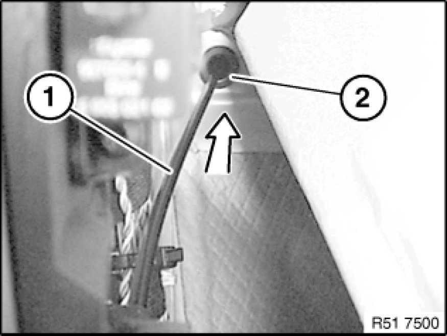

Removing and Installing/Replacing Cable for Front Engine Hood/Bonnet Locks (To Passenger Compartment)
51 23 211 - Removing and installing/replacing cable for front engine hood/bonnet locks (to passenger compartment)

Necessary preliminary tasks:
- Remove trim panel for pedal assembly 51 45 185 Removing and Installing/Replacing Panel For Pedals
- Remove footwell side trim panel on A-pillar Removing and Installing/Replacing Side Trim Panel, Footwell, on A-pillar, Left
- Disengage cable for front engine hood/bonnet locks Removing and Installing/Replacing Cable for Front Engine Hood Locks (To Locks) (to locks)
- Partially detach front carpet lining
Disengage Bowden cable (1) from release lever (2) and feed out in direction of arrow.

Release screws (1) on equipment carrier cover (2).
Feed out equipment carrier cover (2) in direction of arrow and remove.
Feed Bowden cable (1) in direction of arrow out of clip (2).

Feed out Bowden cable (1) in direction of engine compartment.
Important!
Check that grommet (2) is correctly seated (water ingress).
Installation:
Lay Bowden cable (1) without kinks.
Feed grommet (1) in direction of arrow out of bulkhead (2) and remove Bowden cable (3) towards front.
Installation:
Check that grommet (1) is correctly seated
Lay Bowden cable (3) without kinks.